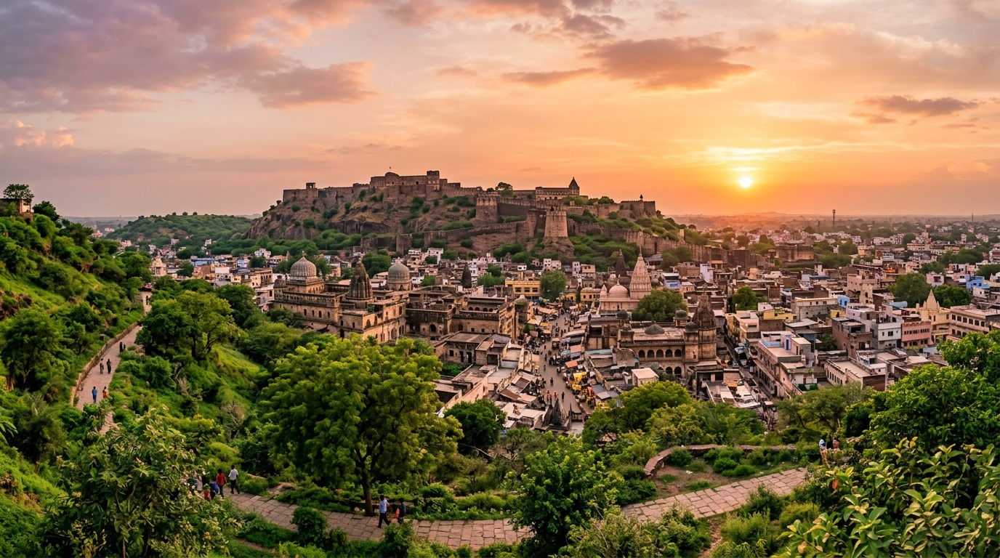
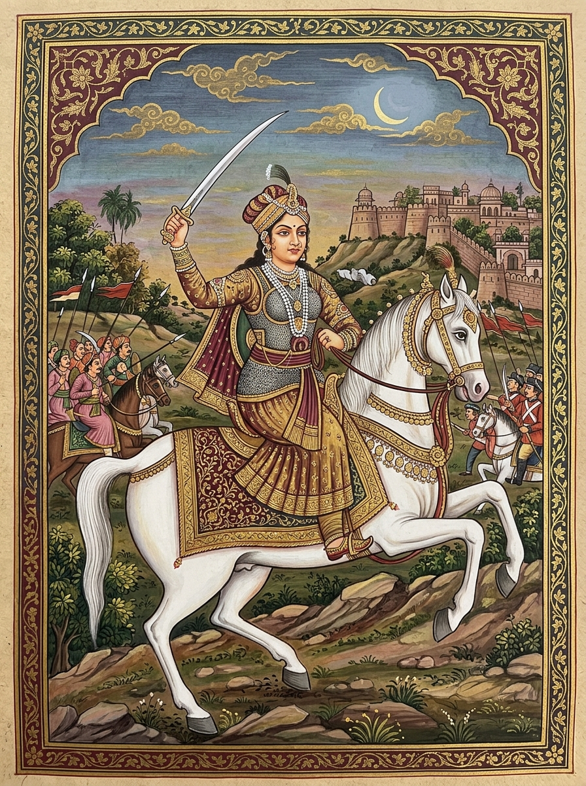
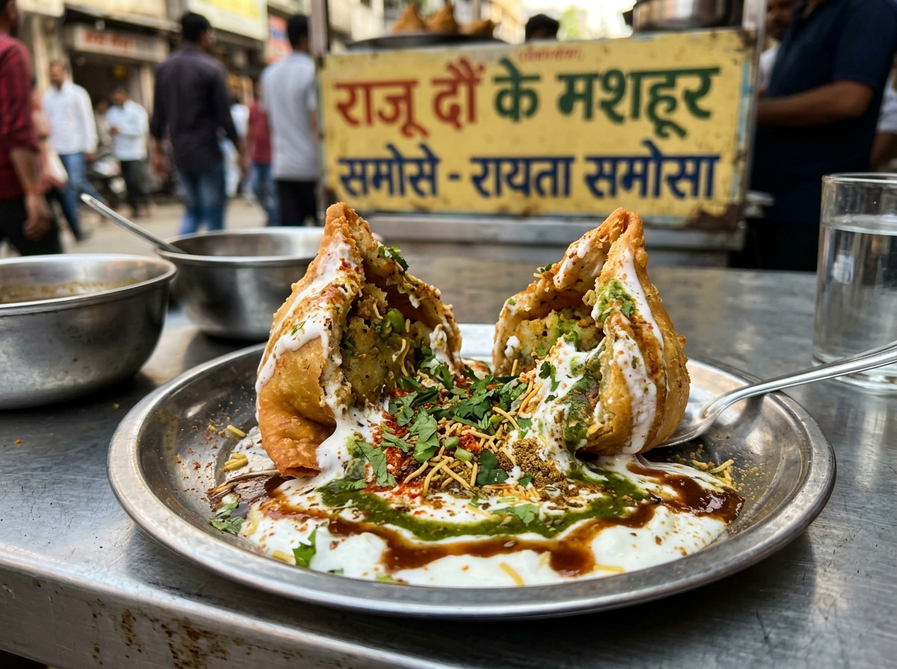
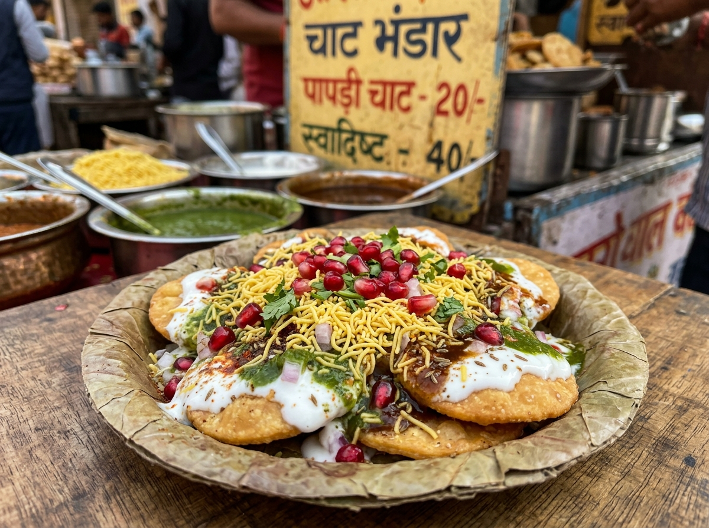
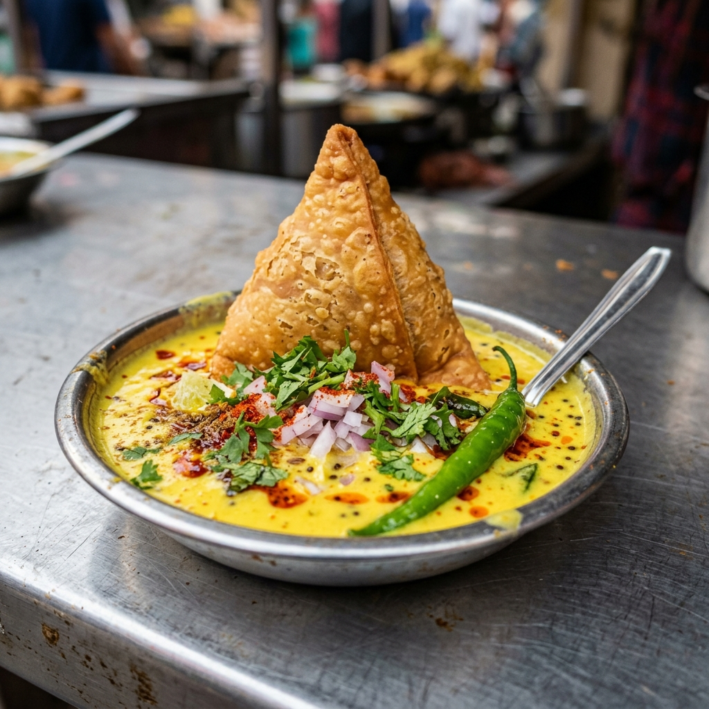

Jhansi — Where History Comes Alive
Explore the history, culture, traditions and heritage of Jhansi — the storied city of Bundelkhand that witnessed the rise of one of India's greatest freedom fighters.
Understanding Jhansi
A gateway to Bundelkhand's rich historical and cultural legacy.

Jhansi Through the Ages
Key periods and events that shaped Jhansi's identity.
Jhansi Heritage Map
Discover the important heritage landmarks of Jhansi.
Jhansi Fort
Step inside the legendary fortress that witnessed the courage of Rani Lakshmibai.
Rani Lakshmibai of Jhansi
The queen who became a symbol of India's resistance and valor.

Connection with Jhansi
Born as Manikarnika Tambe in Varanasi, she married Maharaja Gangadhar Rao Newalkar, the ruler of Jhansi, in 1842 and was given the name Lakshmibai. After the death of the Maharaja in 1853, the British East India Company attempted to annex Jhansi under the Doctrine of Lapse, refusing to recognize her adopted son Damodar Rao as the legal heir.
Role in Jhansi's History
Rani Lakshmibai administered Jhansi effectively after her husband's death. She strengthened the defenses of the city, trained women in combat, and managed the affairs of the state. Her leadership during a period of political turmoil is documented by both Indian and British historical sources.
The 1857 Uprising
During the Indian Rebellion of 1857, Jhansi became a center of resistance against the British. Rani Lakshmibai led the defense of Jhansi Fort against the forces of Sir Hugh Rose in March 1858. After the fall of Jhansi, she escaped and joined Tantia Tope's forces at Kalpi and later at Gwalior, where she died fighting on 18 June 1858.
Places in Jhansi Associated with Her
Living Culture of Jhansi
Discover the traditions, arts, and cultural practices of Jhansi and Bundelkhand.
The Bundelkhand Connection
Jhansi is more than a historical city — it is part of the wider Bundelkhand cultural region.
Bundelkhand is a historic region spanning parts of Uttar Pradesh and Madhya Pradesh, encompassing cities like Jhansi, Orchha, Datia, Tikamgarh, Chhatarpur, and Sagar. The region shares a common cultural identity defined by the Bundeli language, shared folk traditions, distinctive architecture, and a rich legacy of valor and artistry dating back centuries.
Understanding Jhansi means understanding its deep roots in this broader cultural landscape — where fort architecture blends with folk music, where warrior legends meet devotional poetry, and where cuisine tells the story of the land itself.
Food Traditions of Jhansi & Bundelkhand
Explore the culinary heritage that has sustained and celebrated Bundelkhandi culture for centuries.
Moong Dal Chilla
A healthy and savory Indian lentil crepe made from moong dal, cooked to golden perfection and often enjoyed with spicy green or sweet red chutneys. A perfect light snack!

Dau Ke Samose
A legendary Jhansi specialty featuring crushed crispy samosas generously drenched in creamy white rayta (yogurt), topped with spicy green chutney and sweet tamarind sauce.

Jhansi ki Papdi Chaat
A mouth-watering street food sensation in Jhansi, featuring crispy papdi topped with yogurt, tangy tamarind chutney, spicy green chutney, sev, and fresh pomegranate.

Kadhi Samosa
A unique and beloved street food where a crispy samosa is served submerged in a tangy, bright yellow yogurt curry (kadhi), finished with a spicy tadka and fresh onions.